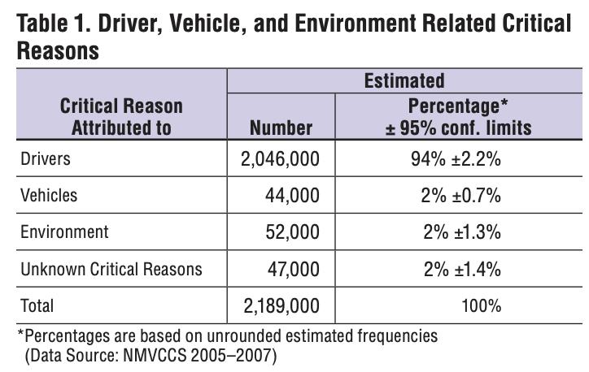

Imagine, a fully autonomous vehicle is travelling on the motorway. On its left, a motorcyclist with no helmet, and on the right, a motorcyclist in full safety gear. Suddenly, a large box falls off the truck in front of the car. Should the car swerve into the protected, or the unprotected motorcyclist? Should it punish the individual doing the right thing, or almost certainly kill someone else? This thought experiment is similar to the one Jason Millar (2014) poses with his Tunnel Problem. But it raises an interesting ethical dilemma, when an autonomous vehicle must make a life or death decision, who decides what the car does, the Drivers, Legislators or Manufacturers, and who bears the responsibility. If a human was driving the car, their response in this situation would simply be a reaction, it is near impossible for a human to accurately analyse and act on the information in this scenario. However, for an autonomous car with hundreds of sensors and cameras, the response is a decision, closely resembling first degree murder (International Assoc of Chiefs of Police, 1977). This paper explores the ethical problems surrounding autonomous vehicles and how society can address these dilemmas responsibly
The United States Department of Transportation (DOT) conducted an investigation which found that over 94% of crashes within the United States of America (USA) alone were due to Driver error (U.S. Department of Transportation National Highway Traffic Safety Administration, 2018).
Whether it's distracted driving, speeding or impaired driving. These are all issues that can be remedied by a fully autonomous vehicle, making driving a safer mode of transport. A 2024 study found that only 1.8% of accidents involving an autonomous driving vehicle (ADV) were due to distractions or poor driving behaviour, compared to 19.8% for human-driven vehicles (HDV). Furthermore, in accidents where a HDV hit an ADV, 82% resulted in a minor injury compared to when an ADV hit an HDV, where injuries dropped to 67% (Abdel-Aty & Ding, 2024). However, it is important to note that the ADVs had a higher risk of crashing at dusk, dawn and during turning manoeuvres than HDVs. Although this is likely to decrease as the underlying machine learning algorithms improve.
These findings suggest that ADVs are overall safer, but they're not immune to crashing.
Which raises a key question, who should be liable in the event of a crash? Current laws assume a human driver
is responsible, but this approach is inadequate as the vehicle itself is responsible for making all of the
decisions. Gurney (2013) argues that liability could fall on the manufacturer or developer, as the car's
decision making is determined by a programmed algorithm. Whereas others suggest a shared liability model,
where responsibility is distributed amongst stakeholders such as the owner, manufacturer and occupants of the
vehicle depending on the circumstances of the accident (Shavell, 2020). From a deontological perspective,
placing liability to manufacturers aligns with the principle of duty, as manufacturers have an obligation to
ensure their products cause no harm. However, under a utilitarian perspective, a shared liability approach may
not produce the greatest good.
If companies are solely liable for ADV accidents, progress in autonomous driving could stall due to excessive
risk and hesitation from shareholders. However, if no party is liable, then victims may never receive justice
or closure, undermining public trust in the technology, halting the adoption of such vehicles. Ultimately, it
is regulators who will decide who is at fault, facing the ethical challenge of balancing responsibility,
innovation, and public safety when regulating autonomous vehicles.
Autonomous vehicles have the potential to significantly improve traffic efficiency, making driving a faster
and more sustainable form of transport. With less vehicles idling in congestion, fuel waste decreases, leading
to lower greenhouse gas emissions and an overall reduced environmental impact. A recent study found that
through Vehicle to Vehicle communication, carbon emissions could be reduced by up to 25% and fuel consumption
by 18% (Jayawardana & Wu, 2022). Notably, even with only 25% adoption of connected autonomous vehicles, 50% of
the results can be attained. This presents a major opportunity for society to mitigate the environmental
impacts from transportation as climate change continues to threaten global sustainability. However, current
autonomous vehicles are expensive, and many opt to purchase a cheaper, non-autonomous vehicle once learning
the cost of an autonomous vehicle (Chase et al., 2018).
While there is no definitive figure on how much cheaper autonomous vehicles will be, forecasts indicate
significant cost declines as the technology matures. One study estimates the operating cost for ADVs per mile
could fall from $0.35USD to $0.15USD by 2040 (Goldman Sachs, 2025). This trend suggests that it is highly
likely that adoption will increase as prices decrease, presenting a unique approach to tackling global warming
emissions from vehicles.
Autonomous vehicles rely on various sensors and cameras to work safely and effectively. The underlying machine
learning algorithms are also trained on this type of data. Which raises concerns about data collection and
privacy, misuse of this data would violate individual privacy rights. One study found that over 50% of users
of Uber's self-driving fleet would opt out of data collection, even if they have to spend 5 minutes accessing
an online system to opt out (Bloom et al., 2017).
However, data collection is crucial to improve machine
learning algorithms, such as those which drive autonomous vehicles. Without sufficient training, an autonomous
car won't be as safe or efficient, and might even be more dangerous. Humans don't drive according to the road
code, so for an accurate autonomous vehicle, real-life data is crucial (Aljehane, 2024). Despite this, in the
event of a security breach, no amount of financial compensation may repair the harm caused.
It is also important to note that the vehicle's so-called 'moral agent' is its underlying programming. From a utilitarian perspective, autonomous vehicles should aim to minimise harm which, in our trolley problem, might choose to swerve into the protected biker as they are more likely to survive the impact. A deontological approach argues that autonomous vehicles should adhere to moral duties, such as never intentionally harming an innocent person regardless of the outcome, which would result in the vehicle not punishing the protected motorcyclist. It is vital that manufacturers of autonomous vehicles take these ethical principles into account when developing new vehicles as autonomous vehicles are not merely new vehicles, they fundamentally reshape responsibility and public trust. If the programming is unfair or biased, adoption of autonomous cars could stall and even potentially decline.
Overall, autonomous vehicles stand to significantly benefit society by alleviating traffic, reducing
greenhouse gas emissions and increasing accessibility for individuals who are unable to drive independently.
Beyond improving convenience and efficiency, the technology offers the possibility of creating cleaner, safer
and more inclusive transport systems that can fundamentally reshape the way society moves forward and
interacts with technology. However, as the technology continues to evolve, it introduces a variety of complex
legal, ethical and technical challenges that must be addressed. Regulators must take a proactive approach and
critically evaluate the risks associated, from algorithmic biases and data privacy to accountability and
decision transparency. Establishing a robust governance framework will be essential to ensure that these
systems are developed responsibly, without risking public safety.
Ultimately, achieving an ethical balance between innovation, regulation and safety will determine the success
of autonomous vehicles. Transparent oversight and continuous ethical reflection will be crucial in growing
public trust and ensuring that the development of autonomous vehicles aligns with the broader interests of
humanity.
. A Study to Investigate the Role and Challenges Associated with the Use of Deep Learning in Autonomous Vehicles. World Electric Vehicle Journal, 15(11), 518. https://doi.org/10.3390/wevj15110518
. Self-Driving Cars and Data Collection: Privacy Perceptions of Networked Autonomous Vehicles Self-Driving Cars and Data Collection: Privacy Perceptions of Networked Autonomous Vehicles. https://www.usenix.org/system/files/conference/soups2017/soups2017-bloom.pdf
. Autonomous Vehicles: Uncertainties and Energy Implications. Eia.gov. https://www.eia.gov/outlooks/aeo/av.php
. Autonomous Vehicle Market Is Forecast to Grow and Boost Ridesharing Presence. Goldmansachs.com. https://www.goldmansachs.com/insights/articles/autonomous-vehicle-market-forecast-to-grow-ridesharing-presence
. Sue My Car Not Me: Products Liability and Accidents Involving Autonomous Vehicles. Papers.ssrn.com. https://papers.ssrn.com/sol3/papers.cfm?abstract_id=2352108
. PREMEDITATED MURDER | Office of Justice Programs. Www.ojp.gov. https://www.ojp.gov/ncjrs/virtual-library/abstracts/premeditated-murder
. Learning Eco-Driving Strategies at Signalized Intersections. https://arxiv.org/pdf/2204.12561
. You Should Have a Say in Your Robot Car's Code of Ethics. WIRED. https://www.wired.com/2014/09/set-the-ethics-robot-car/
. On the Redesign of Accident Liability for the World of Autonomous Vehicles. The Journal of Legal Studies, 49(2), 243-285. https://doi.org/10.1086/711027